![[ANA JDG] Asterix and the Great Rescue - Megadrive](../vi/6oUXi0ckLmA/default.jpg)
![[ Présentation pour la chaîne Grenier des Joueurs ] JDG Prod](../art/SHAR.6419.583.2.jpg)


C'est partit pour une synthèse assez simple:
Dadaïsme: Hasard
Surréalisme: Inconscient
Cubisme: Espace
Futurisme: Dynamique
Art Abstrait: Abstrait
Néoclassicisme: Antique
Romantique: Mort
Réalisme: Vue
Impressionnisme: Rapidité
Fauvisme: Couleur
Symbolisme: Spiritualité
------------------------------------------------------------------------------------------------------------------------------------------------------
Je tiens à préciser que:
Cubsime+Effet de mouvement=Futurisme
Les courants proches du réel:
Surréalisme,Néoclassicisme,Romantisme,Impressionniste et Réaliste!
Les courants abstraits:
Dadaïsme,Cubisme,Futurisme,Art Abstrait,Fauvisme et Symbolisme!
KidpaddleetcieGlin
Description :
Le Blog d'une personne aillant découvert internet en 2007 qui partage une partie de sa vie mais surtout ses réflexions, ses découvertes et ses cours!
Bon, je ne vous garantit pas que 100% du contenu est fiable mais aux moins je l'approuve! :)
N'oubliez pas de me retrouver sur les autres sites internet du réseaux KidpaddleetcieGlin retrouvable dans le premier article de chaque page. ^-^
Bon, je ne vous garantit pas que 100% du contenu est fiable mais aux moins je l'approuve! :)
N'oubliez pas de me retrouver sur les autres sites internet du réseaux KidpaddleetcieGlin retrouvable dans le premier article de chaque page. ^-^
Je bosse actuellement pour la chaîne Grenier des Joueurs
Son morceau préféré
Retour au blog de KidpaddleetcieGlin
Introduction
Les lois de Gestalt (qui regroupe les règles sur la construction, organisation, structuration de l'image) sont des théories qui tente de dégager, via des expériences utilisant un matériel très simple, les lois perceptives qui s'attachent à la détection de la forme seule indépendamment de tout substrat matériel et donc de tout contenu ou toute signification en rapport avec un objet quelconque.
Ces lois ont été dégagées au cours de la première moitié de ce siècle par un ensemble de psychologues et portent le nom de "théorie de la forme" (gestaltthéorie).
Les lois
1.La ségrégation
La ségrégation est l'apparition d'unités à l'intérieur d'un champ plus ou moins homogène
(C'est l'apparition de formes distinctes dans un champ).
La ségrégation correspond à des inégalités de stimulation dans la mesure où l'unités qui apparaissent sont limitées par un contour net.
Les formes constituées par la ségrégation sont comprises comme des formes plus ou moins "solides" et de plus ou moins de "bonne qualité" c'est-à-dire que leur individualité résiste plus ou moins bien au changement quel qu'il soit. Les psychologues de la Gestalt ont étudié avec un matériel très simple les facteurs de cette solidité et on dégagé ainsi une série de lois.
2.Le rapport fond-figure
Plusieurs affirmations pour cette lois et donc plusieurs observations générales:
Le fond paraît s'étendre au-delà du contour qui limite une figure; le fond a le caractère des substances (impalpable).
La figure possède la caractère des choses (plus dense et plus compacte que le fond, possédant un certain poids attribué par le mental) et est perçue plus proche que le fond par un effet de localisation subjective.
Ceci entraîne des modifications de la couleurs apparente.
Connaître les facteurs influençant notre construction mentale vers la figure plutôt que vers le fond.
Dans ces observations, il y a aussi la notion de contour:
La fonction unilatérale du contour : le contour appartient à la figure et jamais au fond qui jouxte la figure.
Exception: les figures doubles
La notion de "contour subjectif" : connaître les modalités de sa construction mentale. Relier aux effets de recouvrement crées par l'interruption de la surface.
3.Loi de la clôture
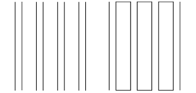
La clôture d'une ligne quelconque va limiter une surface par rapport à une autre et va donc la détacher de celle-ci.Ce n'est pas le cas des lignes ouvertes.
4. Loi de la complexité
Une figure complexe se détache sur un fond uni.
5. Loi de la proximité
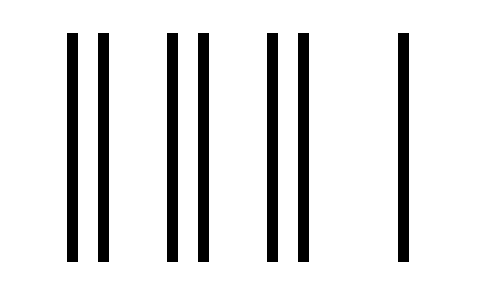
Des points dispersés sur une surface sont des stimuli (de l'énergie à laquelle on peut réagir) faibles car l'homogénéité de cette surface s'oppose à leur ségrégation (présence, perspective). Cependant, la proximité de certains d'entre eux tend à les faire apparaître comme une unité distincte. C'est la loi de la proximité, cette loi est limité à une certaine distance et ne joue plus au-delà d'un certain seuil (moment où la proximité est insuffisante pour s'imposer).
6.Loi de la similitude
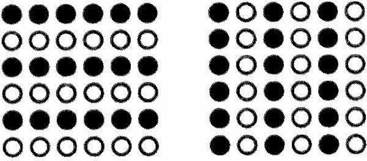
À distance égal, les stimuli se groupent en fonction de leur ressemblance. C'est la loi de la similitude. Proximité et similitude peuvent entrer en conflit.
7. Loi de la bonne forme
Nous accordons une priorité à la figure simple et régulière.
8. Loi de la continuité
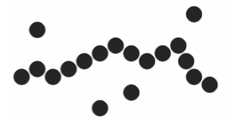
Cette lois utilises 3 consignes:
Présence d'éléments continuant dans une même direction tendent à s'organiser comme une forme unique.
La continuité d'un ensemble de points ou d'une ligne quelconque tend à maintenir la direction de chacune de ses parties dans le sens exigé par celle de l'ensemble.
Connaître les facteurs qui permettent de la construction de contours reliables.
9. Loi de la fermeture
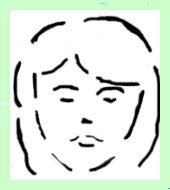
Nous complétons une forme à partir de quelques élément qui nous sont donnés.
(Il faut qu'il y aille des formes manquantes dans une construction logique)
10.Loi de la transposition
Faire subir à une forme une modification de telle manière qu'à la suite de cette modification l'identité de l'unité figurable ait été préservée.
11.Caractère bidimensionnel ou tridimensionnel d'une figure
Deux points sont à prendre en compte:
Les figures qui ont un degré plus élevé de symétrie et qui paraissent plus simples sont davantage perçues comme des figures planes.
À l'inverse, celles qui manquent de symétrie sont interprétées comme des volumes.
12. Lois de la symétrie de la simplicité
Symétrie et simplicité assurent également aux surfaces colorées un privilège d'unité formelle par rapport à celles qui ne possèdent pas ces caractéristiques.
Sources:
https://fr.wikipedia.org/wiki/Psychologie_de_la_forme
http://preunet.fr/gestalt
http://www.psychoweb.fr/articles/psychologie-cognitive/169-gestalt-theorie-les-theories-de-la.html
http://bounie.polytech-lille.net/multimedia/gestalt_vp.pdf
Les lois de Gestalt (qui regroupe les règles sur la construction, organisation, structuration de l'image) sont des théories qui tente de dégager, via des expériences utilisant un matériel très simple, les lois perceptives qui s'attachent à la détection de la forme seule indépendamment de tout substrat matériel et donc de tout contenu ou toute signification en rapport avec un objet quelconque.
Ces lois ont été dégagées au cours de la première moitié de ce siècle par un ensemble de psychologues et portent le nom de "théorie de la forme" (gestaltthéorie).
Les lois
1.La ségrégation
La ségrégation est l'apparition d'unités à l'intérieur d'un champ plus ou moins homogène
(C'est l'apparition de formes distinctes dans un champ).
La ségrégation correspond à des inégalités de stimulation dans la mesure où l'unités qui apparaissent sont limitées par un contour net.
Les formes constituées par la ségrégation sont comprises comme des formes plus ou moins "solides" et de plus ou moins de "bonne qualité" c'est-à-dire que leur individualité résiste plus ou moins bien au changement quel qu'il soit. Les psychologues de la Gestalt ont étudié avec un matériel très simple les facteurs de cette solidité et on dégagé ainsi une série de lois.
2.Le rapport fond-figure
Plusieurs affirmations pour cette lois et donc plusieurs observations générales:
Le fond paraît s'étendre au-delà du contour qui limite une figure; le fond a le caractère des substances (impalpable).
La figure possède la caractère des choses (plus dense et plus compacte que le fond, possédant un certain poids attribué par le mental) et est perçue plus proche que le fond par un effet de localisation subjective.
Ceci entraîne des modifications de la couleurs apparente.
Connaître les facteurs influençant notre construction mentale vers la figure plutôt que vers le fond.
Dans ces observations, il y a aussi la notion de contour:
La fonction unilatérale du contour : le contour appartient à la figure et jamais au fond qui jouxte la figure.
Exception: les figures doubles
La notion de "contour subjectif" : connaître les modalités de sa construction mentale. Relier aux effets de recouvrement crées par l'interruption de la surface.
3.Loi de la clôture
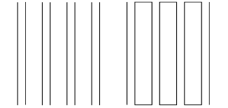
La clôture d'une ligne quelconque va limiter une surface par rapport à une autre et va donc la détacher de celle-ci.Ce n'est pas le cas des lignes ouvertes.
4. Loi de la complexité
Une figure complexe se détache sur un fond uni.
5. Loi de la proximité
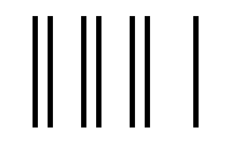
Des points dispersés sur une surface sont des stimuli (de l'énergie à laquelle on peut réagir) faibles car l'homogénéité de cette surface s'oppose à leur ségrégation (présence, perspective). Cependant, la proximité de certains d'entre eux tend à les faire apparaître comme une unité distincte. C'est la loi de la proximité, cette loi est limité à une certaine distance et ne joue plus au-delà d'un certain seuil (moment où la proximité est insuffisante pour s'imposer).
6.Loi de la similitude
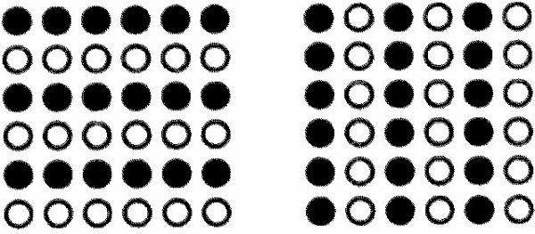
À distance égal, les stimuli se groupent en fonction de leur ressemblance. C'est la loi de la similitude. Proximité et similitude peuvent entrer en conflit.
7. Loi de la bonne forme
Nous accordons une priorité à la figure simple et régulière.
8. Loi de la continuité
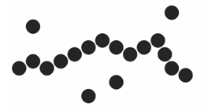
Cette lois utilises 3 consignes:
Présence d'éléments continuant dans une même direction tendent à s'organiser comme une forme unique.
La continuité d'un ensemble de points ou d'une ligne quelconque tend à maintenir la direction de chacune de ses parties dans le sens exigé par celle de l'ensemble.
Connaître les facteurs qui permettent de la construction de contours reliables.
9. Loi de la fermeture
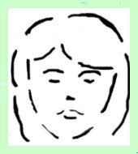
Nous complétons une forme à partir de quelques élément qui nous sont donnés.
(Il faut qu'il y aille des formes manquantes dans une construction logique)
10.Loi de la transposition
Faire subir à une forme une modification de telle manière qu'à la suite de cette modification l'identité de l'unité figurable ait été préservée.
11.Caractère bidimensionnel ou tridimensionnel d'une figure
Deux points sont à prendre en compte:
Les figures qui ont un degré plus élevé de symétrie et qui paraissent plus simples sont davantage perçues comme des figures planes.
À l'inverse, celles qui manquent de symétrie sont interprétées comme des volumes.
12. Lois de la symétrie de la simplicité
Symétrie et simplicité assurent également aux surfaces colorées un privilège d'unité formelle par rapport à celles qui ne possèdent pas ces caractéristiques.
Sources:
https://fr.wikipedia.org/wiki/Psychologie_de_la_forme
http://preunet.fr/gestalt
http://www.psychoweb.fr/articles/psychologie-cognitive/169-gestalt-theorie-les-theories-de-la.html
http://bounie.polytech-lille.net/multimedia/gestalt_vp.pdf
Le dadaïsme est apparût en 1916 lors d'une soiré de Février au cabaret Voltaire de Zurick. Le terme Dada a été trouvé,cette fois-ci pas par un journaliste mais par les auteurs eux-même en cherchant par hasard dans un dictionnaire.Le but du dadaïsme est de s'éloigner, de rejeter, les conventions artistiques vu et revu en période d'avant la première guerre mondiale. L'humour, la liberté et la légèreté semblent être les mots d'ordre de ce mouvement qui utilise la spontanéité de la création et la destruction des normes artistiques pour produire leurs ½uvres.
Le but est donc de s'éloigner, de s'évader de ce climat d'oppression ressentit par les victimes de la première guerre mondiale.
Un premier manifeste sera écrit en 1916 par Hugo Ball (poète et écrivain ALLEMAND) le 14 juillet au Waag Hall à Zurich (soit 6 mois après la création du mouvement Dada). Ce manifeste exprime le refus de Hugo Ball de considérer le courant artistique Dada comme un mouvement artistique. C'est d'ailleurs ce premier manifeste qui va symboliser la toute première rupture entre les différents acteur du mouvement Dada.
Ce qu'on peut remarquer assez souvent dans les ½uvres dada est l'utilisation du hasard car tout n'est que test,essais, rien n'est prévu d'avance et c'est ce qui fait que les ½uvres dada soient aussi perturbantes pour une personne non-initié à ce courant artistique.
À titre personnel, j'aime bien L.H.O.O.Q (1919) de Marcel Duchamp car c'est une parodie de la Joconde de Léonardo DaVinci et c'est tellement décalé que ça me fait toujours rire quand je lis le titre de l'oeuvre ("L.H.O.O.Q."se lit "Elle a chaud au cul") ou quand je regarde la Joconde à moustache!
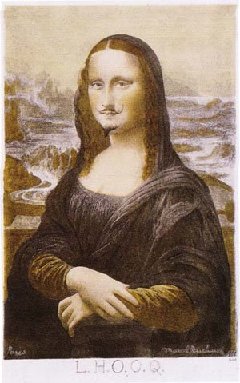
Le but est donc de s'éloigner, de s'évader de ce climat d'oppression ressentit par les victimes de la première guerre mondiale.
Un premier manifeste sera écrit en 1916 par Hugo Ball (poète et écrivain ALLEMAND) le 14 juillet au Waag Hall à Zurich (soit 6 mois après la création du mouvement Dada). Ce manifeste exprime le refus de Hugo Ball de considérer le courant artistique Dada comme un mouvement artistique. C'est d'ailleurs ce premier manifeste qui va symboliser la toute première rupture entre les différents acteur du mouvement Dada.
Ce qu'on peut remarquer assez souvent dans les ½uvres dada est l'utilisation du hasard car tout n'est que test,essais, rien n'est prévu d'avance et c'est ce qui fait que les ½uvres dada soient aussi perturbantes pour une personne non-initié à ce courant artistique.
À titre personnel, j'aime bien L.H.O.O.Q (1919) de Marcel Duchamp car c'est une parodie de la Joconde de Léonardo DaVinci et c'est tellement décalé que ça me fait toujours rire quand je lis le titre de l'oeuvre ("L.H.O.O.Q."se lit "Elle a chaud au cul") ou quand je regarde la Joconde à moustache!
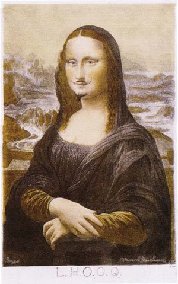
Les origines :
C'est en 1909 qu'un écrivain italien nommé Filippo Tommaso Marinetti publie un manifeste sur le futurisme dans Le Figaro...vous savez,ce célèbre quotidien français !
Le parti prit de Marinetti est d'être "révolutionnaire" en cette époque d'avant-guerre en portant des propos pouvant choquer la bourgeoisie.
Les manifestations des futuristes :
Ils font surtout des manifestes autour de leur mouvement et des pièces de théâtres.
Les thèmes principaux des futuristes sont la vitesse,la ville, la révolte, la mécanique, la guerre, la vie sociale et l'architecture.
Pour illustrer le thème de l'architecture, nous prenons "La Citta Nuova" de Sant'Elia (1888-1916) en 1914.
lien du tableau : https://fr.wikipedia.org/wiki/Architecture_futuriste#/media/File:Santelia03.jpg
On peut remarquer que ce tableau montre aussi une image de la ville de plus en plus grande et donc le thème de "ville" s'y prête aussi !
Pour illustrer la mécanique et la vitesse par le tableau de Luigi Russolo (1885-1947) qui se nomme "Automobile in corsa"(1913).
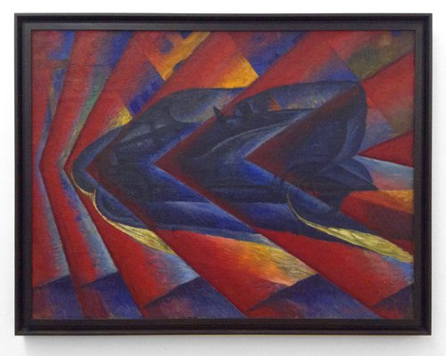
lien du tableau : https://blog.e-artplastic.net/images/artistes/russolo_dynamisme.jpg
On peut remarquer que Luigi a montrer l'espace qui se déforme comme si il était sujet à la pression de la masse bleue qui peut être la dîtes voiture mentionnée dans la titre du tableau.
Pour illustrer la révolte,la guerre et la vie sociale, on peut admirer le tableau La Rivolta (1911) de Luigi Russolo.
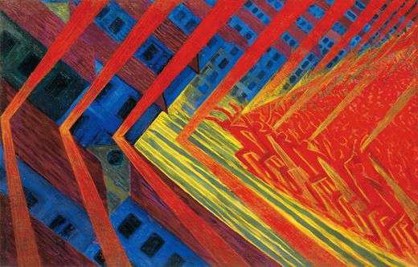
Le lien du tableau : http://ekladata.com/xKUVkIZDN8Akrwf6PAOJ4rQRHBU.jpg
On peut remarquer que des silhouettes humaines sont distinguables dans le tableau, ces silhouettes lèvent les bras comme en signe de révolte et ils se dirigent vers la gauche du tableau.C'est un tableau pour illustrer la révolte du fascisme.
Présentation des auteurs utilisés
Il faut savoir que Luigi Russolo peint comme il joue de la musique car, venant d'une famille de musicien, il met donc un point évident sur la vitesse,le dynamisme.
Antonio Sant'Elia,quant à lui, est un architecte qui n'a pas pût se balader dans ses projets car aucuns des bâtiments qu'il a peint a été réalisé.
La différence entre les peintres futuristes et les peintres cubistes se trouve dans la focalisation, de la perception.
Un cubiste représente l'espace tandis qu'un futuriste représente le temps.
Un cubiste ne représente pas le mouvement,le dynamisme d'une scène.
Sources :
http://www.histoiredelart.net/courants/le-futurisme-13.html
https://fr.wikipedia.org/wiki/Futurisme
https://fr.wikipedia.org/wiki/Manifeste_du_futurisme
http://ekladata.com/3KjXJG-kd6hT31sEE9TSX5GsTKU/Futurisme.pdf
http://aasavina.free.fr/spip.php?article83&id_document=801
C'est en 1909 qu'un écrivain italien nommé Filippo Tommaso Marinetti publie un manifeste sur le futurisme dans Le Figaro...vous savez,ce célèbre quotidien français !
Le parti prit de Marinetti est d'être "révolutionnaire" en cette époque d'avant-guerre en portant des propos pouvant choquer la bourgeoisie.
Les manifestations des futuristes :
Ils font surtout des manifestes autour de leur mouvement et des pièces de théâtres.
Les thèmes principaux des futuristes sont la vitesse,la ville, la révolte, la mécanique, la guerre, la vie sociale et l'architecture.
Pour illustrer le thème de l'architecture, nous prenons "La Citta Nuova" de Sant'Elia (1888-1916) en 1914.
lien du tableau : https://fr.wikipedia.org/wiki/Architecture_futuriste#/media/File:Santelia03.jpg
On peut remarquer que ce tableau montre aussi une image de la ville de plus en plus grande et donc le thème de "ville" s'y prête aussi !
Pour illustrer la mécanique et la vitesse par le tableau de Luigi Russolo (1885-1947) qui se nomme "Automobile in corsa"(1913).
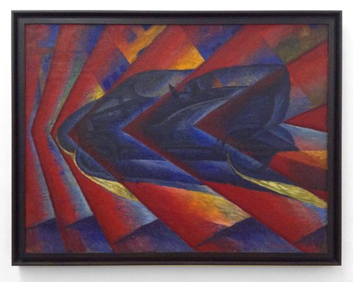
lien du tableau : https://blog.e-artplastic.net/images/artistes/russolo_dynamisme.jpg
{kind=link}
On peut remarquer que Luigi a montrer l'espace qui se déforme comme si il était sujet à la pression de la masse bleue qui peut être la dîtes voiture mentionnée dans la titre du tableau.
Pour illustrer la révolte,la guerre et la vie sociale, on peut admirer le tableau La Rivolta (1911) de Luigi Russolo.
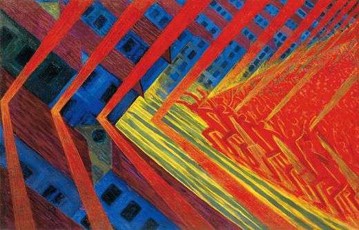
Le lien du tableau : http://ekladata.com/xKUVkIZDN8Akrwf6PAOJ4rQRHBU.jpg
{kind=link}
On peut remarquer que des silhouettes humaines sont distinguables dans le tableau, ces silhouettes lèvent les bras comme en signe de révolte et ils se dirigent vers la gauche du tableau.C'est un tableau pour illustrer la révolte du fascisme.
Présentation des auteurs utilisés
Il faut savoir que Luigi Russolo peint comme il joue de la musique car, venant d'une famille de musicien, il met donc un point évident sur la vitesse,le dynamisme.
Antonio Sant'Elia,quant à lui, est un architecte qui n'a pas pût se balader dans ses projets car aucuns des bâtiments qu'il a peint a été réalisé.
La différence entre les peintres futuristes et les peintres cubistes se trouve dans la focalisation, de la perception.
Un cubiste représente l'espace tandis qu'un futuriste représente le temps.
Un cubiste ne représente pas le mouvement,le dynamisme d'une scène.
Sources :
http://www.histoiredelart.net/courants/le-futurisme-13.html
https://fr.wikipedia.org/wiki/Futurisme
https://fr.wikipedia.org/wiki/Manifeste_du_futurisme
http://ekladata.com/3KjXJG-kd6hT31sEE9TSX5GsTKU/Futurisme.pdf
http://aasavina.free.fr/spip.php?article83&id_document=801
Le cubisme est apparût en 1907 grâce à Pablo Picasso (1881-1973) et George Braque (1882-1963).
Derrière ce nom saugrenu se trouve le même journaliste qui donnera son nom au fauvisme : Louis Vauxcelles (1870-1943).
Il y a eût 3 périodes dans le cubisme qu'on va illustrer avec le thème "L'évolution des portraits cubistes" :
1)La phase cézannienne du cubisme : Présence de volume dans les corps, le résultat est brutal.
2)La phase analytique : Moins évident au niveau du discernement des formes mais se réfère toujours à une vision de la réalité vue par le peintre.
3)La phase synthétique : Le plus évident au niveau du discernement des formes mais ajoute plus de notion de dynamisme avec une grande préférence dans la représentation de nature morte.
Analysons le tableau de Picasso "Les Demoiselles d'Avignon" :
Le tableau :
http://img.over-blog-kiwi.com/0/88/38/41/20140111/ob_5fa4e1_demoiselles-d-avignon.jpg
On peut dire que ce tableau provient de la phase cézannienne du cubisme à cause des femmes toutes en volume et la brutalité des visages pas vraiment enchantant pour des femmes qu'on devine être des "demoiselles" comme le prétend le titre du tableau.
Cette peinture a été faîte en 1907 à l'huile et représente l'intérieur d'une maison close (Bordel) inspiré d'une maison close barcelonaise, située à Avignon BIEN ÉVIDEMMENT PUISQUE C'EST DANS LE TITRE DU TABLEAU !
Il est probable que Picasso voulait provoquer, choquer en cassant les normes esthétiques des peintres d'avant !
Il est possible que trois oeuvres ont influencés cette oeuvre de Picasso :
Le Jugement de Pâris de Raphaël Mengs (1757) :
https://fr.wikipedia.org/wiki/Jugement_de_P%C3%A2ris#/media/File:Mengs,_Urteil_des_Paris.jpg
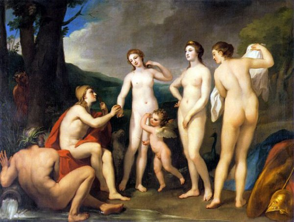
On y retrouve des femmes sublimer à la manière des néo-classiques et on peut se dire que Picasso s'est dit qu'il allait affronté cette oeuvre en affichant une vision de femmes défigurées et donc beaucoup moins sublimes.
Les masques statuaires africains représentant les visages des victimes de syphilis osseuse. Picasso a peur de la maladie et de la mort, une coïncidence avec son succombement à une embolie pulmonaire).
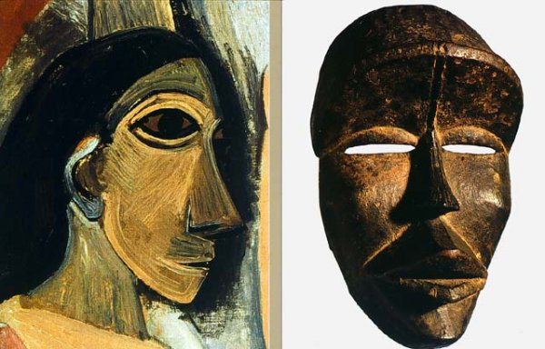
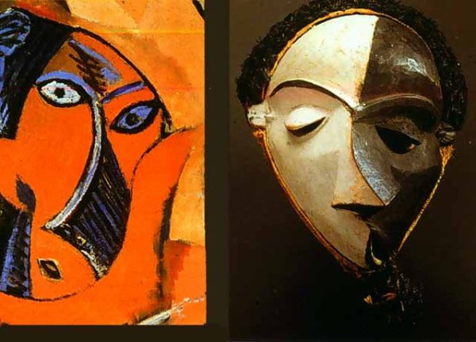
Les "Grandes Baigneuses" de Paul Cézanne de 1894 à 1905 :
https://upload.wikimedia.org/wikipedia/commons/1/1a/Paul_C%C3%A9zanne_047.jpg
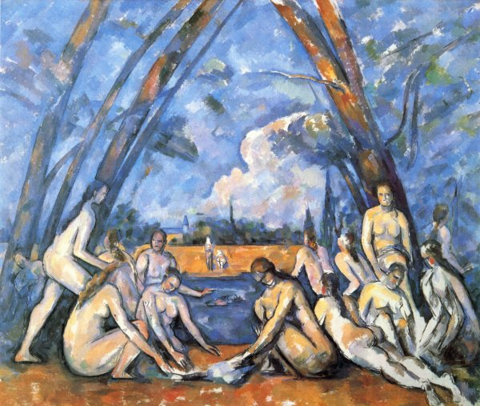
On y retrouve encore une histoire de volume pour les formes mais les femmes ne sont pas sublimées et, en plus, le tableau est peint des mêmes couleurs avec les tons aquatiques (des nuances de bleus) et des tons d'automne (des nuances de marrons).Le ton automne sera d'ailleurs repris dans l'oeuvre de Picasso !
Pour revenir sur l'oeuvre de Picasso,la réaction de André Derain, Henri Matisse,Georges Braque et Guillaume Apollinaire ne fût pas sans cris, effrois ou encore dégoût. C'est l'idée que les prostituées soient mutilées qui a surtout glacé le sang des peintres.
Dans le cubisme il y a 3 acteurs qui ont joués un rôle important dans la collection du cubisme qui sont Daniel-Henry Kahnweiler, Wilhem Uhde et la famille Stein. Grosse mention pour cette dernière qui a encouragé Picasso et Matisse quand ils étaient considérés comme des peintres d'avant-gardes.
Sachez que chaque collectionneur a eût droit à son portrait :
Daniel-Henry Kahnweiler :
https://en.wikipedia.org/wiki/Daniel-Henry_Kahnweiler#/media/File:Picasso_Portrait_of_Daniel-Henry_Kahnweiler_1910.jpg
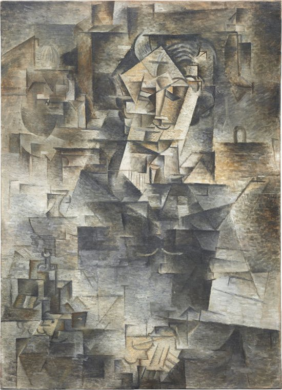
(Par Picasso... on s'en serait doûter)
Wilhelm Uhde :
https://en.wikipedia.org/wiki/Wilhelm_Uhde#/media/File:Pablo_Picasso,_1910,_Portrait_of_Wilhelm_Uhde,_oil_on_canvas,_81_x_60_cm,_Joseph_Pulitzer_Collection.jpg
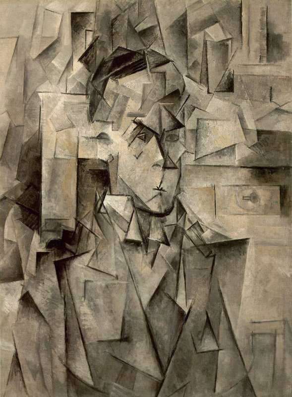
(par Picasso)
la famille Stein : introuvé
Sources :
http://mediation.centrepompidou.fr/education/ressources/ENS-cubisme/Cubisme.htm
http://www.cubisme.org/
https://www.histoire-image.org/etudes/cubisme-modernite
http://www.histoire-art.com/cubisme.html
http://www.simondor.com/blog/2007/04/braque-picasso-et-les-trois-phases-du.html
http://www.clg-hugo-sarcelles.ac-versailles.fr/histart_fichiers/4loupecezanne.pdf
http://mediation.centrepompidou.fr/education/ressources/ENS-cubisme/Cubisme.htm#Chronologie
Derrière ce nom saugrenu se trouve le même journaliste qui donnera son nom au fauvisme : Louis Vauxcelles (1870-1943).
Il y a eût 3 périodes dans le cubisme qu'on va illustrer avec le thème "L'évolution des portraits cubistes" :
1)La phase cézannienne du cubisme : Présence de volume dans les corps, le résultat est brutal.
2)La phase analytique : Moins évident au niveau du discernement des formes mais se réfère toujours à une vision de la réalité vue par le peintre.
3)La phase synthétique : Le plus évident au niveau du discernement des formes mais ajoute plus de notion de dynamisme avec une grande préférence dans la représentation de nature morte.
Analysons le tableau de Picasso "Les Demoiselles d'Avignon" :
Le tableau :
http://img.over-blog-kiwi.com/0/88/38/41/20140111/ob_5fa4e1_demoiselles-d-avignon.jpg
{kind=link}
On peut dire que ce tableau provient de la phase cézannienne du cubisme à cause des femmes toutes en volume et la brutalité des visages pas vraiment enchantant pour des femmes qu'on devine être des "demoiselles" comme le prétend le titre du tableau.
Cette peinture a été faîte en 1907 à l'huile et représente l'intérieur d'une maison close (Bordel) inspiré d'une maison close barcelonaise, située à Avignon BIEN ÉVIDEMMENT PUISQUE C'EST DANS LE TITRE DU TABLEAU !
Il est probable que Picasso voulait provoquer, choquer en cassant les normes esthétiques des peintres d'avant !
Il est possible que trois oeuvres ont influencés cette oeuvre de Picasso :
Le Jugement de Pâris de Raphaël Mengs (1757) :
https://fr.wikipedia.org/wiki/Jugement_de_P%C3%A2ris#/media/File:Mengs,_Urteil_des_Paris.jpg
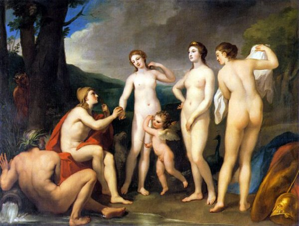
On y retrouve des femmes sublimer à la manière des néo-classiques et on peut se dire que Picasso s'est dit qu'il allait affronté cette oeuvre en affichant une vision de femmes défigurées et donc beaucoup moins sublimes.
Les masques statuaires africains représentant les visages des victimes de syphilis osseuse. Picasso a peur de la maladie et de la mort, une coïncidence avec son succombement à une embolie pulmonaire).
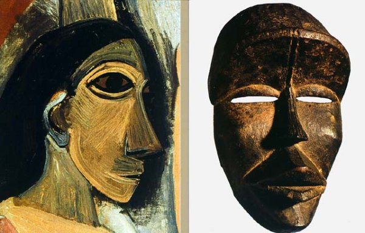
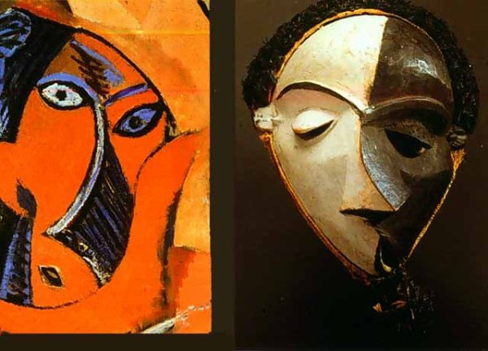
Les "Grandes Baigneuses" de Paul Cézanne de 1894 à 1905 :
https://upload.wikimedia.org/wikipedia/commons/1/1a/Paul_C%C3%A9zanne_047.jpg
{kind=link}
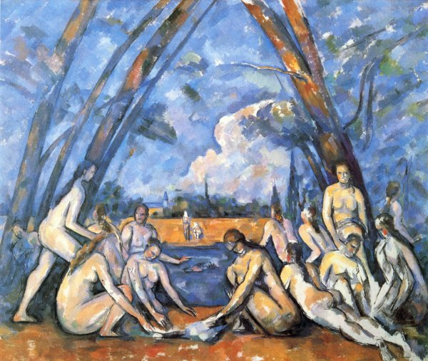
On y retrouve encore une histoire de volume pour les formes mais les femmes ne sont pas sublimées et, en plus, le tableau est peint des mêmes couleurs avec les tons aquatiques (des nuances de bleus) et des tons d'automne (des nuances de marrons).Le ton automne sera d'ailleurs repris dans l'oeuvre de Picasso !
Pour revenir sur l'oeuvre de Picasso,la réaction de André Derain, Henri Matisse,Georges Braque et Guillaume Apollinaire ne fût pas sans cris, effrois ou encore dégoût. C'est l'idée que les prostituées soient mutilées qui a surtout glacé le sang des peintres.
Dans le cubisme il y a 3 acteurs qui ont joués un rôle important dans la collection du cubisme qui sont Daniel-Henry Kahnweiler, Wilhem Uhde et la famille Stein. Grosse mention pour cette dernière qui a encouragé Picasso et Matisse quand ils étaient considérés comme des peintres d'avant-gardes.
Sachez que chaque collectionneur a eût droit à son portrait :
Daniel-Henry Kahnweiler :
https://en.wikipedia.org/wiki/Daniel-Henry_Kahnweiler#/media/File:Picasso_Portrait_of_Daniel-Henry_Kahnweiler_1910.jpg
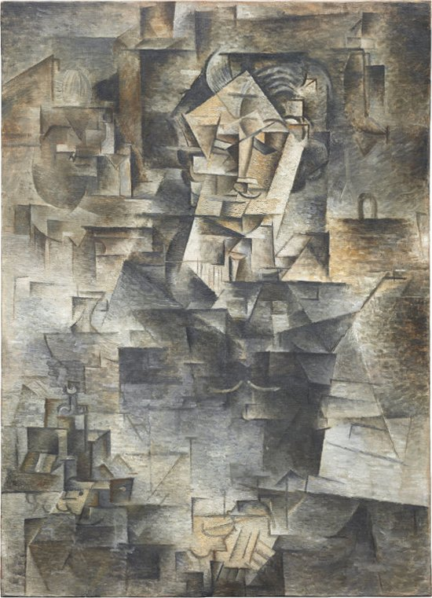
(Par Picasso... on s'en serait doûter)
Wilhelm Uhde :
https://en.wikipedia.org/wiki/Wilhelm_Uhde#/media/File:Pablo_Picasso,_1910,_Portrait_of_Wilhelm_Uhde,_oil_on_canvas,_81_x_60_cm,_Joseph_Pulitzer_Collection.jpg
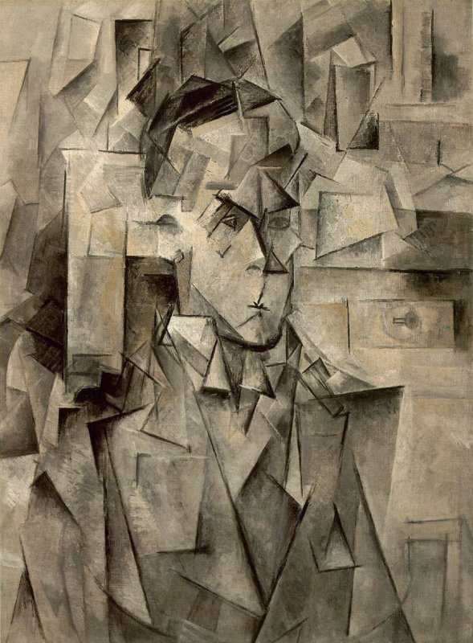
(par Picasso)
la famille Stein : introuvé
Sources :
http://mediation.centrepompidou.fr/education/ressources/ENS-cubisme/Cubisme.htm
http://www.cubisme.org/
https://www.histoire-image.org/etudes/cubisme-modernite
http://www.histoire-art.com/cubisme.html
http://www.simondor.com/blog/2007/04/braque-picasso-et-les-trois-phases-du.html
http://www.clg-hugo-sarcelles.ac-versailles.fr/histart_fichiers/4loupecezanne.pdf
http://mediation.centrepompidou.fr/education/ressources/ENS-cubisme/Cubisme.htm#Chronologie
Les sources principales d'inspiration de Édouard Manet :
Il fût influencé par :
Diego Velázquez (Peintre Baroque qui faisait principalement de la Peinture Espagnole),la photographie car elle lui a permit de faire ses portraits,Francisco Goya et Gustave Courbet pour ses influences réalistes.Les peintres qu'il apprécie particulièrement sont Diego Vélasquez et Francisco Goya pour son style réaliste espagnole.
Les thèmes que privilégie Manet sont la peinture espagnole, la nudité,...
Les caractéristiques du travail de Manet partent du principe d'une représentation réaliste mais où des traits ont été caricaturé (dans le sens de parodier) pour faire sensation. Sa composition reste réaliste, la gestion de la lumière n'est pas prise en compte, il a employé des pastels, la gravure, l'huile,l'encre autographique... et expérimenter des techniques tel que la mine de plomb et le lavis à l'encre de chine.
Il met toujours son sujet au centre de l'illustration et le nomme dans le titre.
Sa relation avec Emile Zola et Charles Baudelaire est amicale mais aussi d'intérêt de courant. En effet, les trois partagent des idées modernes et sont aussi en conflit avec les artistes peintres et littéraires de l'époque.
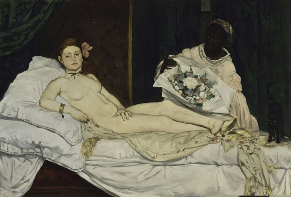
Dans "Olympia" de 1863, on y retrouve la structure de Manet où le sujet est centré. On y retrouve une parodie d'une représentation de la Vénus d'Urbino où sa nudité est insolente pour l'époque et où la présence du chat fait un décalage humoristique avec le chien d'Urbino.
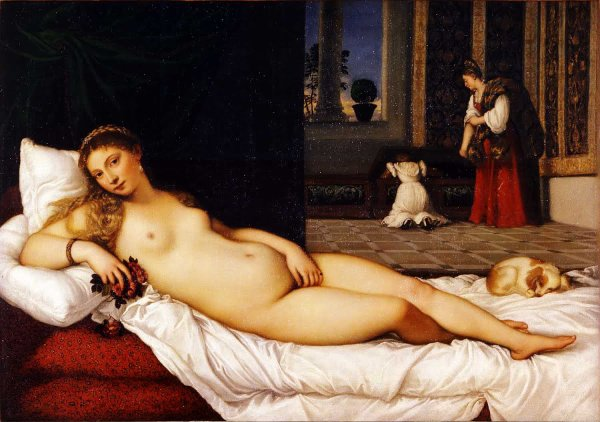
C'est en 1863 que Manet fera une grande exposition de ses ½uvres pendant l'organisation du Salon Officiel mais c'est lors de cette exposition que Manet va pouvoir sortir de l'ombre et divisé le public avec une minorité d'amateurs qui s'en inspireront.
Sources:
1. https://fr.wikipedia.org/wiki/%C3%89douard_Manet
2. http://www.larousse.fr/encyclopedie/personnage/%C3%89douard_Manet/131480
Il fût influencé par :
Diego Velázquez (Peintre Baroque qui faisait principalement de la Peinture Espagnole),la photographie car elle lui a permit de faire ses portraits,Francisco Goya et Gustave Courbet pour ses influences réalistes.Les peintres qu'il apprécie particulièrement sont Diego Vélasquez et Francisco Goya pour son style réaliste espagnole.
Les thèmes que privilégie Manet sont la peinture espagnole, la nudité,...
Les caractéristiques du travail de Manet partent du principe d'une représentation réaliste mais où des traits ont été caricaturé (dans le sens de parodier) pour faire sensation. Sa composition reste réaliste, la gestion de la lumière n'est pas prise en compte, il a employé des pastels, la gravure, l'huile,l'encre autographique... et expérimenter des techniques tel que la mine de plomb et le lavis à l'encre de chine.
Il met toujours son sujet au centre de l'illustration et le nomme dans le titre.
Sa relation avec Emile Zola et Charles Baudelaire est amicale mais aussi d'intérêt de courant. En effet, les trois partagent des idées modernes et sont aussi en conflit avec les artistes peintres et littéraires de l'époque.
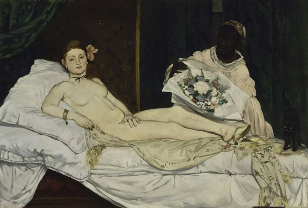
Dans "Olympia" de 1863, on y retrouve la structure de Manet où le sujet est centré. On y retrouve une parodie d'une représentation de la Vénus d'Urbino où sa nudité est insolente pour l'époque et où la présence du chat fait un décalage humoristique avec le chien d'Urbino.
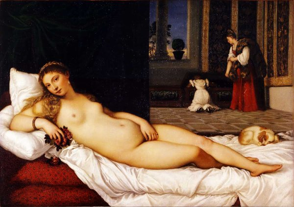
C'est en 1863 que Manet fera une grande exposition de ses ½uvres pendant l'organisation du Salon Officiel mais c'est lors de cette exposition que Manet va pouvoir sortir de l'ombre et divisé le public avec une minorité d'amateurs qui s'en inspireront.
Sources:
1. https://fr.wikipedia.org/wiki/%C3%89douard_Manet
2. http://www.larousse.fr/encyclopedie/personnage/%C3%89douard_Manet/131480
La photographie dans l'histoire de l'art a permit à tout à chacun de reproduire la réalité.
Les origines de la photographie se trouve dans la "camera obscura" et
la "lanterne magique" (principes remontant à l'Antiquité) ainsi que le "physionotrace".
Chacune de ces technologies (technique) ne permettait pas de fixer l'image das un support fixe. Il a fallut attendre Nicéphore Niepce par son utilisation du bitume de Judée et de l'essence de lavande pour avoir une première photographie en 1826.
Le procédé sera plus concret en 1839 quand celui-ci aura réussit à réduire le temps d'exposition. L'utilisation de boite ayant dedans une plaque de cuivre enduit de sels d'argent a permis d'avoir une oeuvre d'être plus nette et ayant une exposition d'une demie heure.C'est ce qu'on nommera la Daguerréotype. C'est d'ailleurs en 1839 que le procédé sera achetable dans le commerce afin de photographier ce qu'on a devant les yeux.
Ainsi, tout les domaines dès les années 1850 emploient cet appareil.
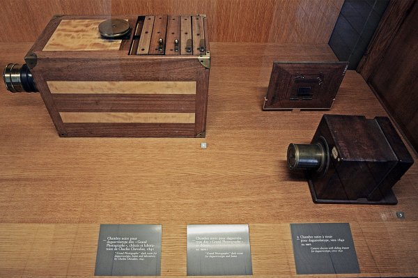
C'est grâce à l'amélioration de ce principe que le temps de pause fût amoindrit (diaphragme réglable), la netteté augmentée, le support copiable (passage de la plaque de métal au papier),...
Le photographe le plus connu est Nadar (Félix Tournachon) pour ses portraits des bourgeois de son époque ainsi que de la photographie aérienne.
Gustave Le Gray (ancien peintre)fera surtout des photographies de paysage.Il fera passé des sentiments en truquant/montant ses photographies.
La photographie aidera aussi les peintres à composer leurs tableaux pour éviter un temps de pause trop long et gagner en précision.
Les origines de la photographie se trouve dans la "camera obscura" et
la "lanterne magique" (principes remontant à l'Antiquité) ainsi que le "physionotrace".
Chacune de ces technologies (technique) ne permettait pas de fixer l'image das un support fixe. Il a fallut attendre Nicéphore Niepce par son utilisation du bitume de Judée et de l'essence de lavande pour avoir une première photographie en 1826.
Le procédé sera plus concret en 1839 quand celui-ci aura réussit à réduire le temps d'exposition. L'utilisation de boite ayant dedans une plaque de cuivre enduit de sels d'argent a permis d'avoir une oeuvre d'être plus nette et ayant une exposition d'une demie heure.C'est ce qu'on nommera la Daguerréotype. C'est d'ailleurs en 1839 que le procédé sera achetable dans le commerce afin de photographier ce qu'on a devant les yeux.
Ainsi, tout les domaines dès les années 1850 emploient cet appareil.
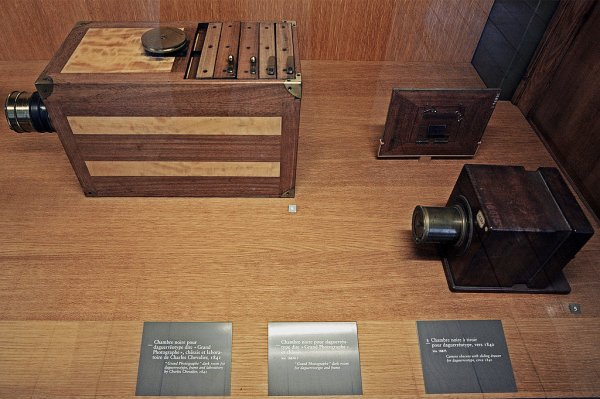
C'est grâce à l'amélioration de ce principe que le temps de pause fût amoindrit (diaphragme réglable), la netteté augmentée, le support copiable (passage de la plaque de métal au papier),...
Le photographe le plus connu est Nadar (Félix Tournachon) pour ses portraits des bourgeois de son époque ainsi que de la photographie aérienne.
Gustave Le Gray (ancien peintre)fera surtout des photographies de paysage.Il fera passé des sentiments en truquant/montant ses photographies.
La photographie aidera aussi les peintres à composer leurs tableaux pour éviter un temps de pause trop long et gagner en précision.
Le néo-classicisme (vers 1750) se distingue parmi le courant romantique (vers 1800) et le courant réaliste (vers 1848) grâce à la présence de élément antique (des romains, des toges, des dorures,...) mais aussi grâce à ses mises en scène plutôt idéalisées où apparaît des hommes musclés (et, parfois,des femmes dénudées). Les visages sont souvent réservés, voir neutre. Toute la peinture est figée et elle est très détaillée.
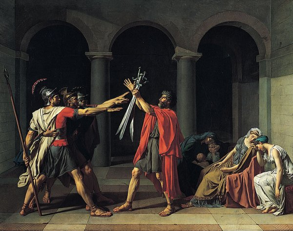
Jacques-Louis David, Le Serment des Horaces
Le romantique (vers 1800) se distingue par son ambiance morbide, dramatique. ce mouvement artistique met en avant les morts et les défaites de l'Homme dans des scènes dynamique et très expressifs où des gens font face à leur destin.
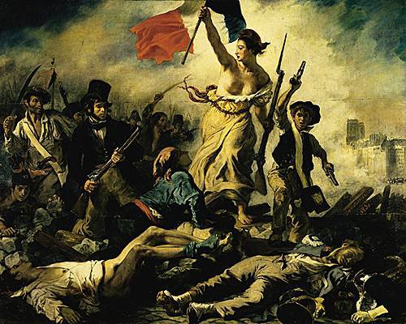
Eugène Delacroix, la Liberté guidant le peuple
Le réalisme (vers 1848)se distingue par sa fidélité à la réalité (pas d'effet de composition). Il montre des scènes du quotidien donc pas d'événement historique ou de moment dramatique.
Les représentations anecdotiques et pittoresques tel que le travail moderne, la vie quotidienne, la nature morte, le paysage et le portrait sont donc représentées.
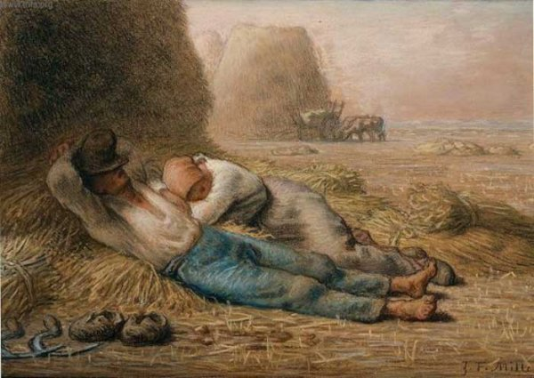
La Méridienne de Millet
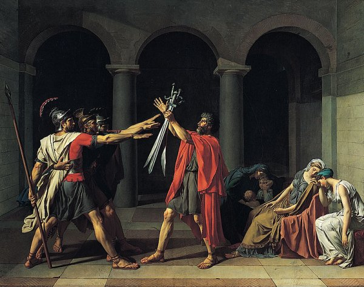
Jacques-Louis David, Le Serment des Horaces
Le romantique (vers 1800) se distingue par son ambiance morbide, dramatique. ce mouvement artistique met en avant les morts et les défaites de l'Homme dans des scènes dynamique et très expressifs où des gens font face à leur destin.
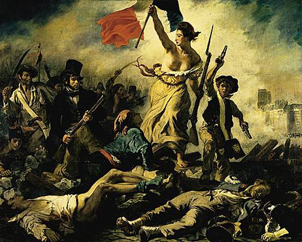
Eugène Delacroix, la Liberté guidant le peuple
Le réalisme (vers 1848)se distingue par sa fidélité à la réalité (pas d'effet de composition). Il montre des scènes du quotidien donc pas d'événement historique ou de moment dramatique.
Les représentations anecdotiques et pittoresques tel que le travail moderne, la vie quotidienne, la nature morte, le paysage et le portrait sont donc représentées.
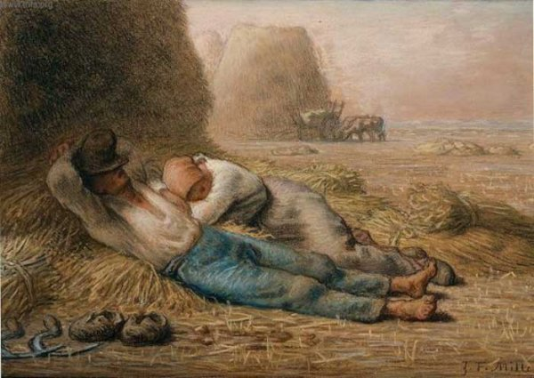
La Méridienne de Millet
Pour analyser une oeuvre , on peut émettre une fiche technique QQQOCP qui signifie
"Qui Que Quoi Où Comment Pourquoi". Cette fiche technique permet d'informer sur le nom de l'auteur, le titre, la date, la technique et les dimensions.
N'oublier pas de comparer les ½uvres par rapport à leurs thèmes, leurs compositions, leurs couleurs ,leurs styles,... Ce qui vous permettra aussi (dans le domaine de la penture) de déterminer son courant.
"Qui Que Quoi Où Comment Pourquoi". Cette fiche technique permet d'informer sur le nom de l'auteur, le titre, la date, la technique et les dimensions.
N'oublier pas de comparer les ½uvres par rapport à leurs thèmes, leurs compositions, leurs couleurs ,leurs styles,... Ce qui vous permettra aussi (dans le domaine de la penture) de déterminer son courant.
Bon, pour commencer en esthétique à la Haute École Albert Jacquard à Namur, en Belgique, on nous a donné un cours où on nous a mit au courant comme quoi nous devrions voir les courants artistiques pour saisir l'évolution de la relation entre l'homme et l'art!
Même si la préhistoire,l'Antiquité,le Moyen-âge, la Renaissance, le XVIIIe siècle et le XXIe siècle ne seront pas vue en profondeur la première année d'étude,la période 1800 à 2000 sera étudié en profondeur!
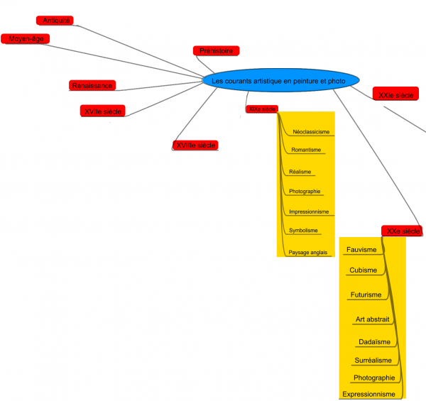
Les articles à propos ayant le tag "aide esthétique" va donc servir à référencer un maximum d'information pour distinguer les différents courants afin de pouvoir avoir une synthèse de tout ce qu'on doit connaître pour la session d'examen de janvier 2017.
Fait intéressent que je ne savais pas avant: La photographie est arrivé en 1839!
Cela me choque beaucoup parce que ça a fortement bouleverser le monde de l'art de créer une machine qui faisait en un instant un travail plus précis qu'un peintre qui aurait mit des mois à produire un visuel d'une telle qualité.
Pour aller plus loin sur le sujet de la photo, voici un lien:http://www.linternaute.com/photo_numerique/magazine/dossier/les-grands-moments-de-l-histoire-de-la-photographie/les-debuts-de-la-photographie-en-couleur.shtml
En tout cas,j'espère que le tag "aide esthétique" sera bien référencé et surtout qu'il nous amènera à un contenu riche d'information précises.
Partage